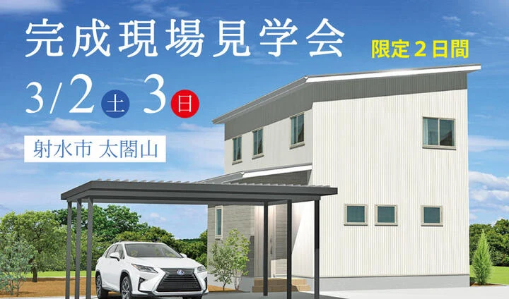
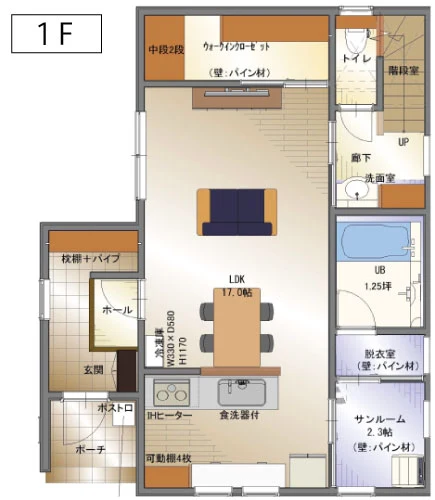
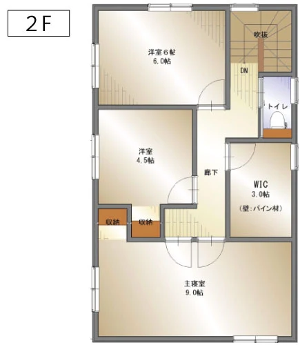
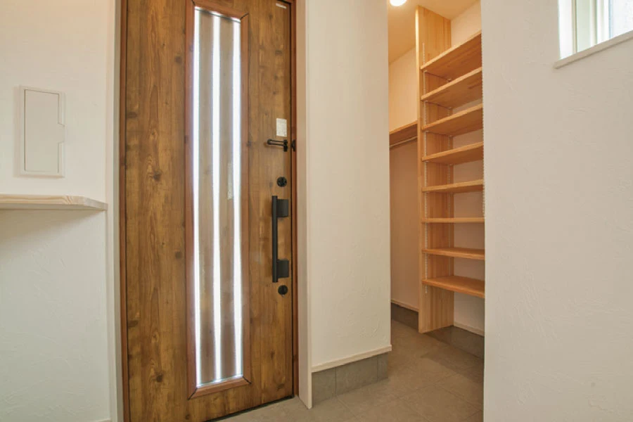
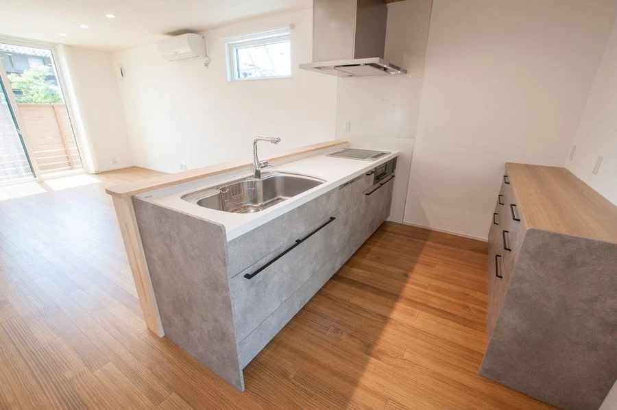
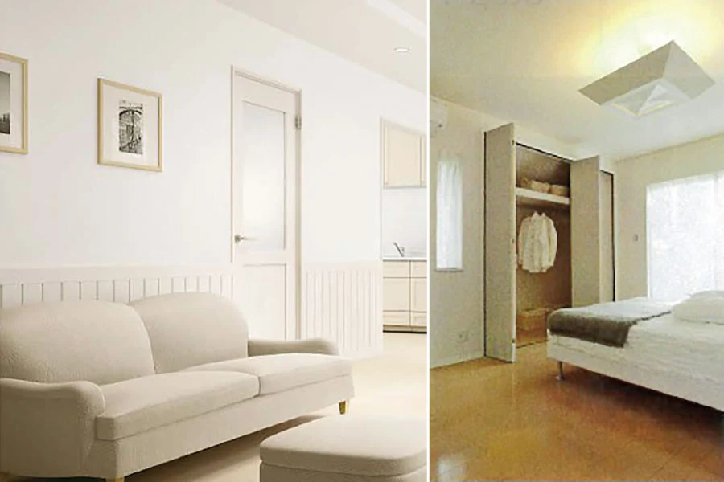
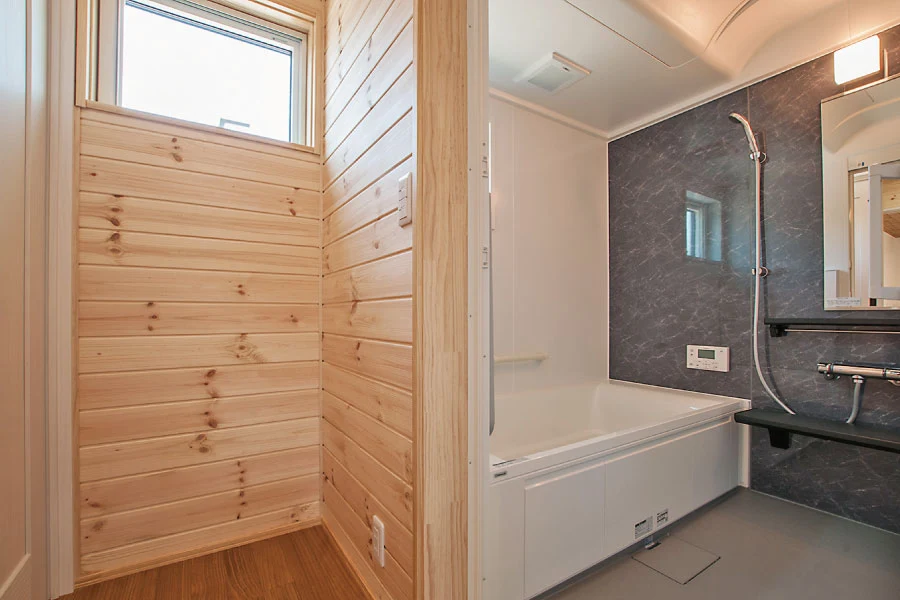
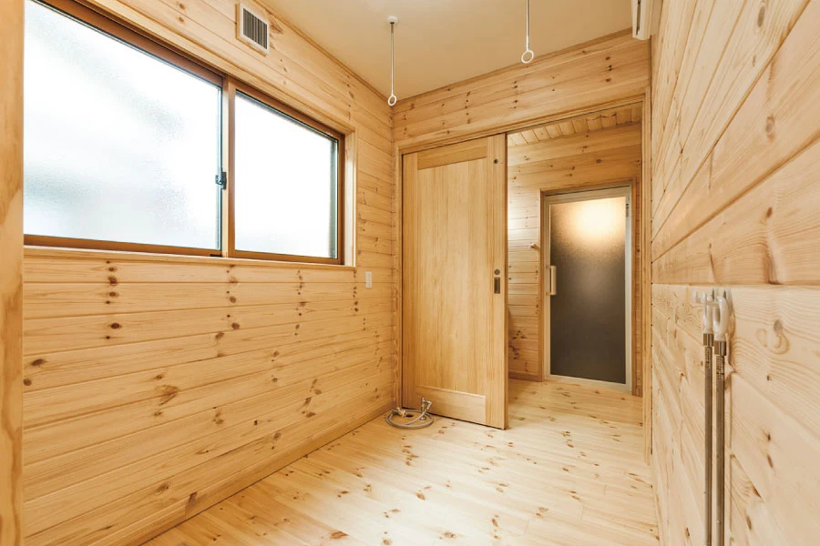
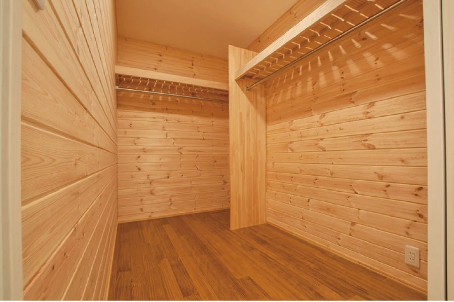

イベント情報
（終了しました）【射水市中太閤山】完成現場見学会
詳しいご案内
日程・価格・募集内容などは、掲載当時の情報です。
『光熱費ゼロ』の賢い暮らし
"省エネ+創エネ" で実現
フジ創アイノスの家は、家の中の快適さを保つ「省エネ・高性能」が標準仕様。
「太陽光発電パネル」が生み出す"創エネ"と合わせることで、
家庭内で使用されるエネルギー消費量をすべてまかなう『ZEH(ゼロ)エネルギーハウス』を実現しました。
エネルギーの高騰や不測の事態にも備える『新しい暮らし方』の家を、
お施主様のご厚意で実現した限定２日間に、見て、触れて、ぜひ体感してください。

○間取り


○ 玄関

大容量のシューズクロークと玄関クロークをセットして、お出かけ前と後がとても便利な空間になりました。
○ キッチン

キッチン周りは同色系の食器棚でコーディネート。
○ 内装

内装は「呼吸する壁」と呼ばれる天然素材「漆喰」の壁。
白い漆喰の壁と白い建具で統一された空間は、清潔感と洗練された印象を与えてくれます。
○浴室・脱衣所

1.25坪の大型ユニトバスは、日常のバスタイムが特別なひと時に変わる贅沢な空間。
脱衣所は保温性・吸湿性の高い無垢材を採用。結露やヒートショックを予防する健康・快適住宅です。
○ サンルーム

広いサンルームも、壁・天井・床の全てに天然無垢のパイン材を採用しました。
○ ウォークインクローゼット

主寝室横には、大容量の収納が可能な大きなウォークインクローゼットを配置。
◯「天然素材の家」が「幸せな住宅」の理由
住む人が「幸せ」であるためには、「健康」であることが大前提。
多くの家が、"新建材" と呼ばれる化学物質を含有した建材を使って建てられていますが、眼の刺激、のどの刺激、頭痛、疲労感など、多様な症状を訴える「シックハウス症候群」は、この化学物質が原因とされるデータが数多く報告されています。
安心して健康的な生活をしていただくために、不健康素材を含まない「天然素材」にこだわった家づくりをしています。